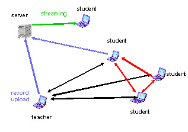

Closed Projects
Musical / Notebookuniversity subproject mobile videoconferences
Extract from the final report
The underlying technology
The digital audio-video / media conference system daViKo [1] in this project is used is proprietary developed multi point able video conference software without server without central multiple conference unity (MCU). It is sketched as a Peer-to-Peer-Model, and thought as a conference system this is to be used like e-mail. However, this means that the system is not correspondent to the H323 standard [3].
Nuclear component of the system is a quick, highly efficient wavelet-based Video compression codec. The accompanying communication software can be put by suitable tax parametres in the running company on ranges of from 64 to 4000 kBit/see. The audio data are compressed with an algorithm MP3. Audio and video data can be transferred about unicast as well as multicast - protocol.
In addition the system is still an Application Sharing module which allows common work and teleteaching is integrated into the system. The system is especially suited for Intranet applications or wirelessly linked video conferences, because the necessary minimum of data-transfer-rate is 64 Kbit/s and the audio quality and video quality can be adapted to the available range. For smaller available ranges the video stream can be also switched off. That means every single participant can choose the post available range in 4 different modes: 1.only hear, 2.hear and speak, 3.hear and see or 4.hear, see and video send in different quality. These modes can be switched during the runtime.
WLAN at the FHTW
In 1. described video / media - communication system was installed and tested in mobile 802.11b application WLAN. The problem by the application WLAN of video communication is that the participants in a common Access point couple to themselves the range of max. 11 Mb/see must share. With such a technology it turned out sensible that only the teacher was to be seen always fully by video and to be heard, while the other participants (i.e. the students) made use only when required.
It were used beside 802.11b standard WLAN also 802.11 gs WLAN where a max. range of 54 MB/SEE is available. Therefore up to 7 notebooks have been used over one 802.11 gs WLAN Access point in a full peer to peer video conference, i.e. every conference member could see everybody (in the video picture QCIF hearing format 176x144 pixels) and in good audio quality.
Implemented learning scenarios
Beside the video conference / Broadcast - scenarios with the mentioned known range problems, a diminished scenario has turned out useful. If all participants are in a space, it is to be sent sensibly the powerpoint slides or other learning materials based on PC of the performer with the help of the Application sharing function live by WLAN directly to the participant notebooks. This increases the legibility and learning effectiveness in comparison to materials centrally projected with overhead-projectors considerably. In addition, the participants themselves can send own slides to the other partners and with it also in the central Beamer (distributed presenting arms).
There is also the possibility of an asynchronous distributed learning scenario, i.e. every participant station (notebook or PC in the LAN) can tape the meeting. Then in practice a tutor or a student will control the recording. With it the performer is relieved of the service of the admission operating technology.
Asynchronous learning
The data of a lecture are stored by a station switched in the conference in a proprietary format. Then the taped Audio/Video/Media data are trans-encoded in a Microsoft-Streaming format and are provided on a Streaming server and linked in the learning platform Clix. Then they can be called from Clix as a web-based Video streaming together with the PC-application any time on the Internet about browsers compatible with Windows.
With the help of a version scaled it the whole teaching material and learning material can be also played on WLAN capable PDAs. This extends the mobility of the passive participants substantially.
Conclusion
- A video conference system which is applicable about WLAN on the whole campus in the FHTW was installed.
- The system was used in the course of the project in single lectures.
- Video of based Content was generated in different variations
- Experiments were carried out to the mobility with Videosessions
Problems
- Problems with the audio-settings. During transmitting it can come for short audiodisturbances.
- Range problems appear if more than 6 participants do full 2 Ways video conference. This causes the number of the participants with full back canal that is limited to the in each case active ones. All the other participants receive only audio and Application Sharing data.
- Not all student participants were in the possession of a WLAN-capable notebook during the arrangements.
Advantages of the system
An easy use with low expenditure in hardware. The performer and the students could switch on practically without installation and without change of location their laptops, click in their cameras and headsets and take up connection with the other participants by mouse click and the lecture could start.